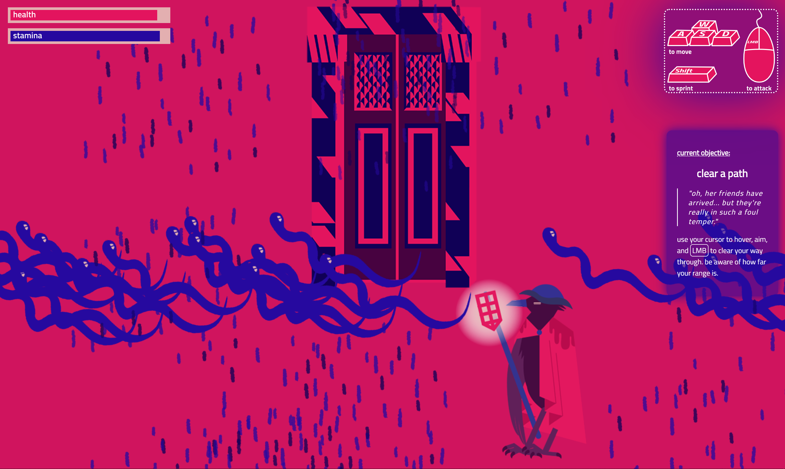
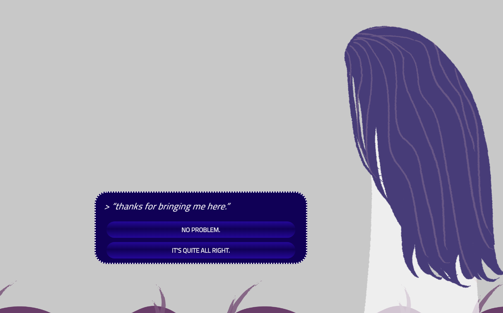
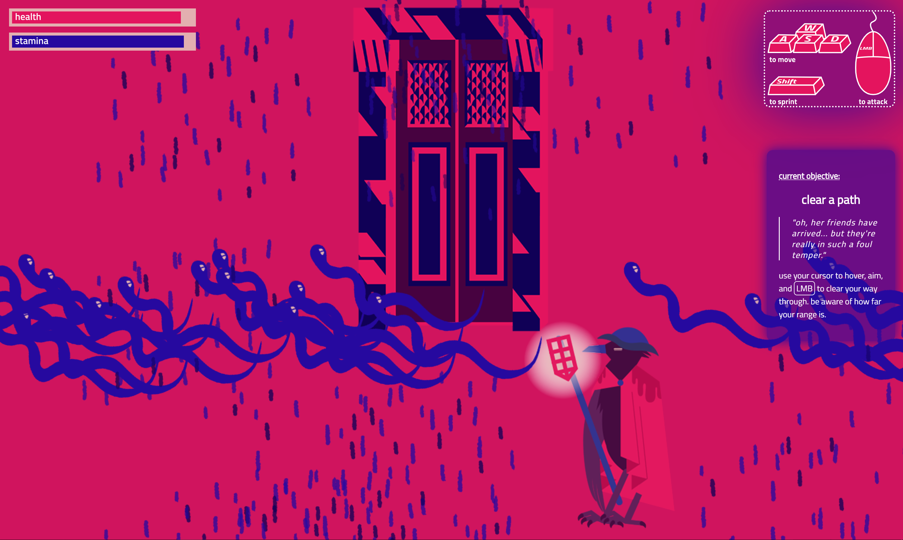
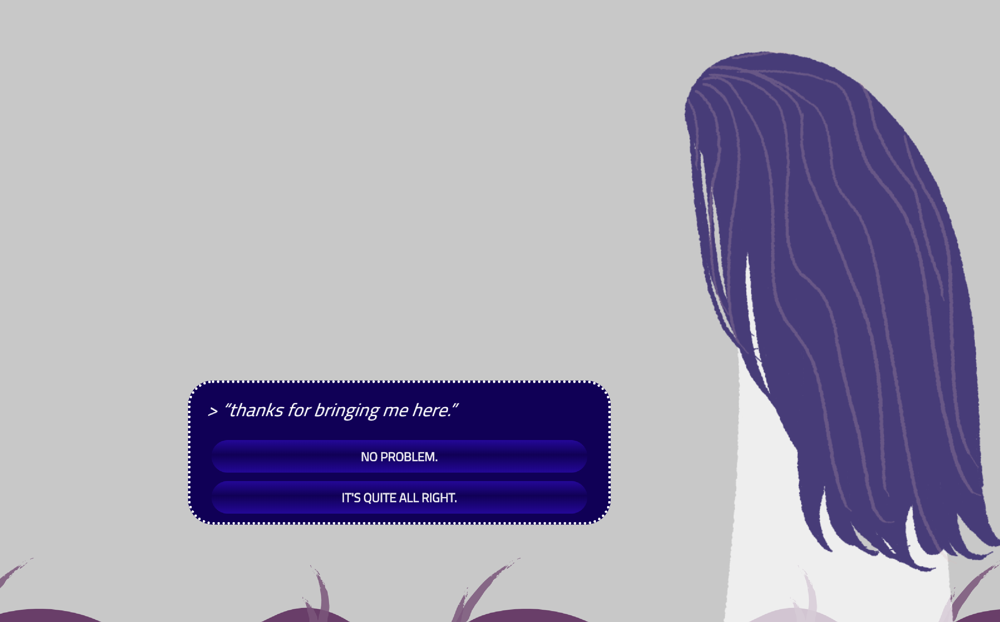

MAJ JENKINS.
PSYCHOPOMP
PSYCHOPOMP is a game about guiding your past trauma to a final resting place. You act as the guide to your trauma through levels of grief, fear, and rage, until you finally reach the realm of understanding and acceptance.
Like spirits, the experiences that you carry are parts of you that have died. Like when you die, you cannot change what has happened to you. Rather, you can only accept its fated arrival and be guided to a final place of rest. Understand that it may not be an easy journey or responsibility to bear, but rather a necessary one.
A psychopomp is a guide of souls to the world of the dead. In PSYCHOPOMP, you play as who we conceive of as "the ferryman" guiding a newly deceased spirit to the eternal afterlife. You will face challenges on your journey, as the realm is inhabited by many. But do not fear, the ferryman is an experienced traveller, and they have walked this road many times before.
This game was created in p5.js by Lauren McCarthy and p5.play beta initiated by Paolo Pedercini (@molleindustria).
PLAY HERE: https://xarts.usfca.edu/~mrjenkins/art315/project3/

 


